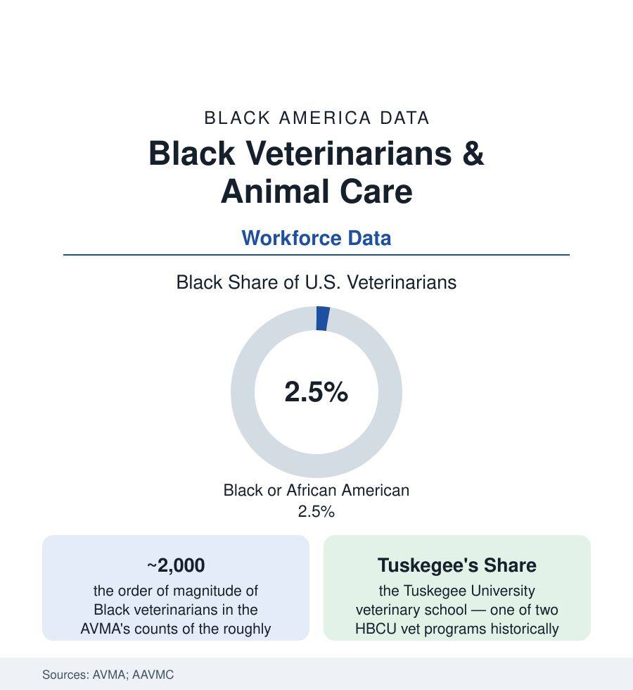

Black Employment
Black Veterinarians: Two Percent of the Doctors of Animals
Black veterinarians are about 2–3% of the profession — among the lowest shares in any licensed field — in a country where Black households own millions of pets. The AVMA data.

The smallest professional number in this section may belong to the animal doctors: Black veterinarians constitute roughly two to three percent of America's approximately 125,000 veterinarians in the AVMA's workforce counts — a share lower than law's, lower than architecture's neighborhood, in a profession whose patient base includes the tens of millions of pets in Black households (roughly a third of Black households own dogs in the pet-industry surveys, with cats and other animals behind). The profession's pipeline is one school's story to an almost literary degree: Tuskegee. This article reads the veterinary file.
The Tuskegee Pipeline and the 32 Schools
American veterinary education runs through roughly thirty-two accredited colleges — the scarcest professional-school map in this atlas (fewer seats per capita than medicine, admission rates more competitive than most medical schools in the applicant data) — and its Black history concentrates at Tuskegee University, whose veterinary school (founded 1945, when the Southern veterinary colleges were closed to Black applicants by law and custom alike) has produced a share of the nation's Black veterinarians commonly cited around seventy percent — a single institution carrying a profession's diversity the way Meharry carried medicine's. The founding dean's program (Dr. Frederick Patterson's institution-building, the school surviving the accreditation threats of the segregation era in the record) is the profession's parallel census: for decades, the realistic door for a Black applicant to veterinary medicine in America was one campus in Alabama. The modern diversification (the AAVMC's applicant data show Black students at roughly three to four percent of veterinary matriculants in recent classes — double the profession's share, crawling at the pipeline's usual pace) spreads across the flagship land-grants and the newer schools, with Tuskegee and the profession's multicultural organizations (the National Association for Black Veterinarians, founded 2018) building the mentorship tier the numbers require.
The Wider Animal Workforce
The occupation's layers beneath the doctorate run more representative and worse paid, in the workforce's usual shape: veterinary technicians (credentialed, in chronic national shortage in the industry data — Black representation in the mid single digits in the technician surveys), veterinary assistants and kennel staff, animal-control officers (a municipal workforce, the shelters and humane societies' staffs), groomers and trainers (a gig-and-small-business tier — the pet-services slice of the business census), and the research and public-health veterinarians (the USDA and military veterinary corps — the federal door of the public-sector file, where Black veterinarians' share runs higher and the food-safety and disease-surveillance missions are staffed). The industry consolidating above them is the file's economics: corporate practice (the rollup of independent clinics by the large groups and the Mars-scale pet conglomerates) has repriced the profession's ownership tier within a generation — the independent-practice buy-in that was the veterinarian's wealth ladder repriced in the deal data, the Black practice owner's position in the new structure this decade's count will record.
The Demand Side: Pets, Access, and the Care Gap
The care-access data close the loop between the workforce and the community: the pet-ownership rates by race in the industry surveys (dog ownership within reach of parity, the full pet economy's spending per Black pet household running lower on the income gradient), the veterinary-care utilization gap (the access-to-care research documenting cost, transportation, and clinic-desert geography — the same map as the human health file's, drawn for animals), and the shelter system's data (adoption, intake, and the municipal shelter workforce's front-line experience of the community's animals). The profession's own equity turn (the access-to-care movement in veterinary medicine — the spectrum-of-care practice model as its clinical expression) is the current literature's growth area, with the Black practitioners and the Tuskegee institution again at its center. The pipeline programs (the pre-vet clubs and 4-H and FFA channels feeding the applicant pool — their rural and urban participation data the pipeline's first gate) determine whether the next AVMA census moves off its two-to-three.
Reading the Veterinary Data
Two percent of the doctors, one school that made most of them, and a waiting room full of the community's animals: the veterinary file compresses this atlas's themes into a single small profession — the segregated door, the HBCU that answered it, the pipeline math that governs what happens next. Tuskegee's share is the monument and the warning in one statistic: the door worked. The profession's task in the data is to build thirty-one more of them.
More in Black Employment
The Black Unemployment Rate: The Two-to-One Pattern
Black unemployment runs at roughly twice the White rate — 5.5 percent against 3.3 percent in annual averages — a ratio stable across five decades of federal data. How it is measured and why it persists.
Black Median Weekly Earnings: The 80-Cent Ratio
Black full-time workers earn a median of about $900 a week — roughly 80 cents for every dollar White workers earn. The BLS earnings data by group, gender, and occupation.
Black Labor Force Participation: Working at National Rates
Black labor force participation runs at roughly the national rate — and Black women participate at higher rates than White women. The BLS participation data.
Source: American Veterinary Medical Association workforce and senior surveys; Association of American Veterinary Medical Colleges; U.S. Bureau of Labor Statistics; APPA National Pet Owners Survey.